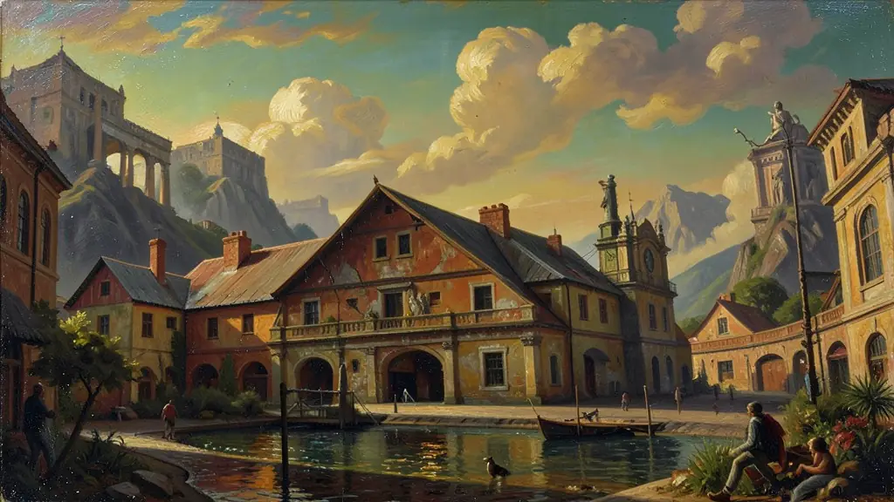
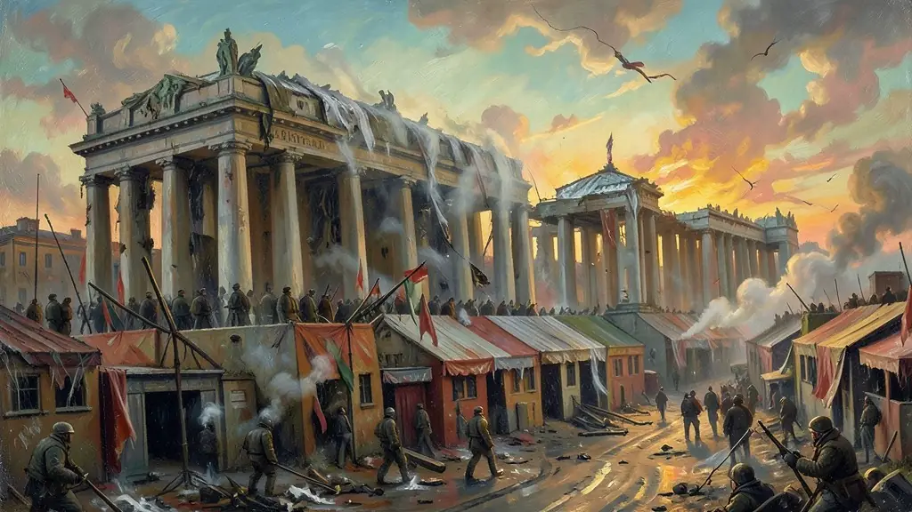
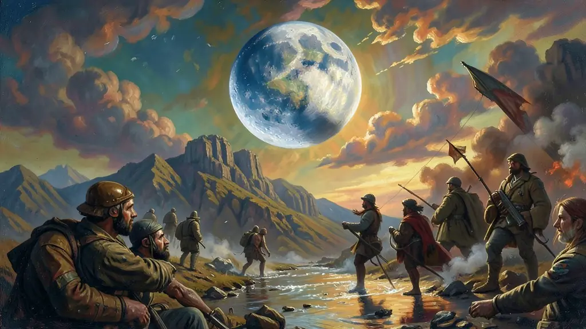

Capítulo 01
1. 1945: A Divisão da Alemanha e do Mundo
Após a queda de Hitler, a Alemanha foi dividida em quatro zonas de ocupação, que depois se tornaram duas Alemanhas: a Ocidental (RFA, capitalista) e a Oriental (RDA, socialista). Stalin buscou criar um 'cordão sanitário' na Europa do leste para proteger a Rússia de futuras invasões. Foi o início de uma competição que duraria quase 50 anos por cada palmo do mapa terrestre.

Capítulo 02
2. O Muro de Berlim e a Cortina de Ferro
Em 1961, para conter a fuga de cidadãos do lado socialista para o capitalista, a RDA ergueu o Muro de Berlim em uma única noite. O muro cercava Berlim Ocidental e tornou-se a cicatriz física da Guerra Fria. Famílias foram separadas por 28 anos, e quem tentava cruzar a zona da morte era fuzilado, provando a natureza autoritária do regime soviético em crise.

Capítulo 03
3. A Corrida Espacial: Missão à Lua
A conquista do espaço era a maior vitrine de superioridade científica. Se você pode colocar um satélite em órbita (como o Sputnik), pode colocar um míssil nuclear em qualquer cidade inimiga. A chegada de Neil Armstrong na Lua em 1969 foi a maior vitória de propaganda dos EUA, demonstrando que o sistema capitalista era capaz de produzir tecnologia super avançada frente aos soviéticos.

Capítulo 04
4. Vietnã e Cuba: O Conflito nas Periferias
No Vietnã, os EUA enfrentaram uma guerra de guerrilha humilhante contra os comunistas do norte. Foi a primeira guerra televisionada da história, gerando protestos hippie em todo o mundo. Em Cuba, a revolta de Fidel Castro e a instalação de mísseis russos na ilha em 1962 quase causaram a III Guerra Mundial. Kennedy e Khrushchev negociaram no limite do abismo para salvar a terra da radiação.
Capítulo 05
5. O Fim: Perestroika e o Colapso da URSS
Mikhail Gorbachev assumiu a URSS em 1985 e tentou modernizá-la: Perestroika (reforma econômica) e Glasnost (abertura política). No entanto, o sistema estava tão mofado que desmoronou. Com a queda do muro em 1989, as nações socialistas declararam independência uma a uma. Em 1991, a bandeira vermelha foi baixada no Kremlin, marcando a vitória definitiva do modelo capitalista liberal.
A Guerra Fria (1947-1991) foi o período de confronto global indireto entre as duas superpotências sobreviventes da Segunda Guerra Mundial: os Estados Unidos (capitalismo) e a União Soviética (socialismo). Marcada pelo 'equilíbrio do terror' nuclear, a disputa não resultou em um conflito direto entre os gigantes, mas em guerras por procuração (Coreia, Vietnã, Afeganistão) e em uma frenética corrida espacial e armamentista que exauriu os recursos de ambos os lados.
A Doutrina Truman e o Plano Marshall foram as ferramentas americanas para a contenção do comunismo na Europa Ocidental, enquanto o Pacto de Varsóvia e o COMECON consolidaram o bloco soviético. O mundo tornou-se bipolar, e qualquer conflito interno em países do Terceiro Mundo era imediatamente interpretado sob a ótica da disputa ideológica. No Brasil, o clima de Guerra Fria foi o pano de fundo para a marginalização do PCB e as tensões que culminaram no golpe de 1964.
A queda do Muro de Berlim em 1989 simbolizou o fim de uma era onde o mundo era dividido por 'cortinas de ferro'. Para o Enem, é vital compreender que a Guerra Fria não foi apenas militar, mas uma batalha cultural e tecnológica que influenciou desde a arte até o desenvolvimento da internet. O estudo deste período permite analisar a formação da ordem mundial contemporânea e as raízes de muitos conflitos geopolíticos que ainda observamos hoje.
Fonte: GADDIS, John Lewis. História da Guerra Fria. Rio de Janeiro: Nova Fronteira, 2006.
Atividades interativas
Questões para fixar
A Crise dos Mísseis em Cuba (1962) é considerada o momento mais perigoso da Guerra Fria por que:
Os termos 'Perestroika' e 'Glasnost' referem-se ao conjunto de reformas implementadas na URSS por Mikhail Gorbachev. O que elas representavam na prática?